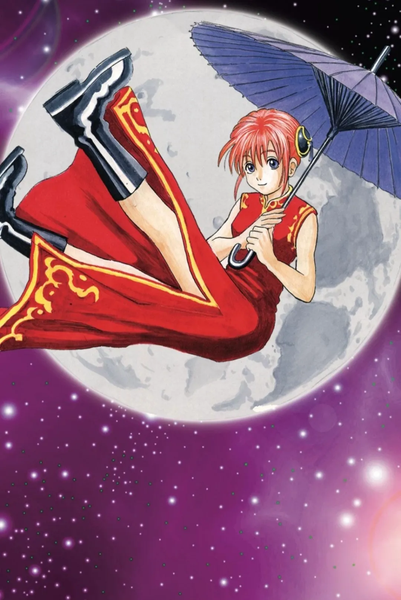

하타노 에루
하타노 에루
旗野愛理 | Eru Hatano

성별
여성
나이
20대 중후반
생일
1월 28일 | 물병자리
신체
169cm, 53kg | O형
가족
아버지 하타노 나오카
이명
정보상 하쿠시
소속
아카이서커스단
직위
단장
성우
히카사 요코
[ 정보 더 보기 ]
통칭
누님,
광대여자,
정보상,
에루 씨,
하쿠시,
하쿠쨩,
하타노 공,
에루 아가씨
주무기
발리송
좋아하는 것
다도, 즐거운 일
싫어하는 것
자극적인 음식
개요
은혼의 드림주.
상세
우주에서 온 아카이서커스단의 단장.
즐기는 것에는 친구도 적도 마다오도 없다며 방금 처음 본 양이지사와도 친구를 먹는 모습을 보인다.
캐릭터성
비주얼
내용 작성
성격
내용 작성
다도 애호가
중증 오챠즈키(お茶好き)
정보상 하쿠시
오직 말빨로만 살아남는다.
먼저 말하지는 않지만 딱히 숨기지도 않음. 필요에 따라 정체를 바로 밝히기도
전투력
내용
작중 행적
자세한 내용은 하타노 에루/작중 행적 문서를 참고하십시오.
인간관계
자세한 내용은 하타노 에루/인간관계 문서를 참고하십시오.
기타
가르쳐줘 긴파치 선생에서는 사회 선생님으로 등장한다.
둘러보기
내용